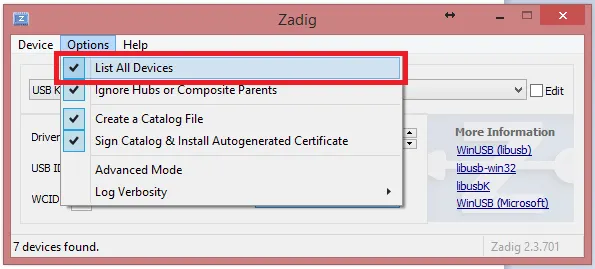
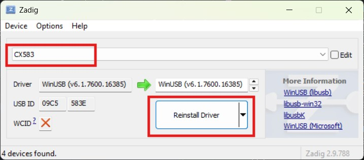
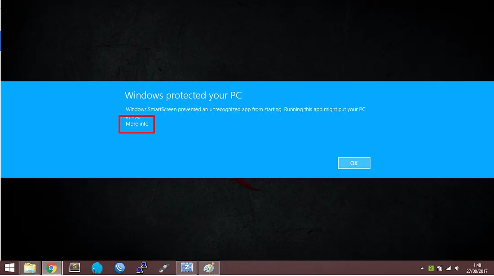
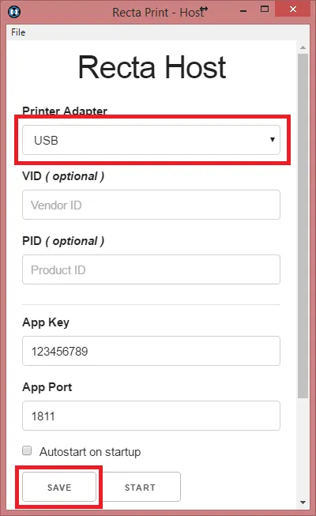

STANDARD OPERATING PROCEDURE (SOP)
Manajemen Data Kegiatan Skrining RHD - YJI 2026
- Meja Registrasi (1) & Antropometri (2): Tempat pertama anak datang. Petugas mengentri NIK, data demografi, serta pengukuran BB/TB. Struk barcode identitas dicetak di meja ini.
- Ruang Tunggu Dokter: Anak memegang struk barcode masing-masing sambil mengantre panggilan pemeriksaan.
- Meja Pemeriksaan Echo / Dokter: Dokter menggunakan mesin Lumify. Dokter memindai barcode anak untuk mengisi Patient ID di Lumify, melakukan pemeriksaan, lalu men-scan ulang di aplikasi screening untuk menentukan status REDFLAG / NORMAL.

[Opsi 1: Meja Registrasi dan Antropometri dipisah. Dianjurkan untuk kegiatan skrining yang melibatkan banyak peserta]

[Opsi 2: Meja Registrasi dan Antropometri digabung. Dianjurkan untuk kegiatan skrining yang melibatkan sedikit peserta]
Aplikasi ini didukung oleh sistem Progressive Web App (PWA) yang memungkinkannya beroperasi penuh tanpa jaringan internet. Namun wajib mengikuti aturan ini:
- H-1 Kegiatan: Seluruh PIC perangkat (laptop/tablet petugas & HP dokter) WAJIB membuka website minimal 1x saat kondisi online internet.
- Langkah ini bertujuan agar mesin browser (Service Worker) mengunduh seluruh skrip, font, gambar, dan pustaka scanner/barcode ke memori lokal perangkat.
- Setelah berhasil dibuka sekali saat online, disarankan untuk melakukan klik "Add to Home Screen" (Tambahkan ke Layar Utama) agar aplikasi terpasang seperti aplikasi native dan siap dipakai offline total di sekolah tujuan.
- Standardisasi Kode Lokasi (Mutlak): Kode lokasi skrining (1-95) harus sudah disepakati di tingkat PIC Wilayah sebelum hari H dan tidak boleh berubah di tengah jalan karena kode ini menyusun keunikan ID peserta.
- Disiplin Nomor Meja: Jika dalam 1 lokasi terdapat lebih dari 1 meja registrasi, pastikan nomor meja diinput berbeda (Meja 1, Meja 2, dst) untuk menghindari bentrok generate nomor urutan otomatis antar-tab/perangkat.
- Navigasi Cepat: Petugas diimbau membiasakan diri menggunakan tombol Tab pada keyboard fisik untuk berpindah antarkolom input form demi efisiensi waktu entri.
I. Persiapan Unduhan
Ada beberapa file esensial yang harus diunduh dan disiapkan terlebih dahulu pada laptop perantara printer:
-
Recta Host: Aplikasi utama yang menjembatani perintah cetak dari browser menuju mesin printer thermal.
🔗 Download Recta Host -
Zadig (Khusus OS Windows): Software utilitas untuk menyuntikkan driver WinUSB agar adapter USB printer thermal kasir dapat dikenali dengan baik oleh sistem Recta.
🔗 Download Zadig
II. Langkah Instalasi Driver USB via Zadig
Jika menggunakan printer thermal dengan koneksi kabel USB, konfigurasi driver wajib diganti ke WinUSB menggunakan langkah berikut:
- Hubungkan kabel USB printer thermal ke laptop, lalu nyalakan printer dengan menahan tombol power.
- Buka aplikasi Zadig yang sudah diunduh tadi.
- Pada menu bar atas, klik menu Options lalu centang pilihan List All Devices.
- Buka dropdown menu perangkat, lalu pilih device printer Anda. (Catatan: Umumnya terdeteksi dengan nama "???". Jika ragu, silakan lepas dan colok kembali kabel USB printer untuk memastikan nama perangkat yang muncul/hilang).
- Pastikan target driver di sebelah kanan tanda panah hijau mengarah ke WinUSB.
- Klik tombol Install Driver atau Replace Driver. Tunggu proses instalasi hingga muncul notifikasi sukses.


III. Langkah Instalasi & Setup Recta Host
- Buka file installer
recta-host-win32-ia32-1.0.0-setup.exe. - Jika muncul proteksi keamanan berupa pop-up pesan "Windows protected your PC", jangan panik. Cukup klik tulisan More info lalu pilih tombol Run Anyway.
- Tunggu proses loading instalasi berjalan hingga selesai.
- Setelah selesai, jendela aplikasi Recta-Host akan terbuka secara otomatis di layar.
- Pengaturan Port: Pada opsi Printer Adapter, ubah setelan menjadi USB karena kita menggunakan kabel. Untuk kolom isian
VIDdanPID, silakan dikosongkan saja. - Klik tombol 💾 Save di bagian bawah untuk mengunci konfigurasi adapter.
- Klik tombol ▶️ Start untuk mengaktifkan layanan cetak. Jika konfigurasi sukses tanpa kendala, pada kotak Log di bagian bawah akan memunculkan teks hijau bertuliskan "Service Started !".
- Klik tombol 📄 Test-Print untuk melakukan uji coba cetak fisik kertas struk demi memastikan printer sudah merespons dengan normal.


IV. Aktivasi di Aplikasi Skrining
Setelah status Recta Host di laptop berbunyi Service Started, kembali ke halaman entri data aplikasi kita, buka pengaturan printer di pojok kanan atas, masukkan App Key dan App Port yang tertera di Recta Host, lalu klik hubungkan. Sistem siap memproduksi struk barcode otomatis setiap kali tombol simpan data pasien ditekan.
- Dokter pemeriksa echo membuka fitur "Screening & Redflag" pada HP/Tablet pribadi.
- Arahkan kamera ke struk barcode pasien anak. Setelah ID terdeteksi, kamera otomatis mati dan memunculkan pop-up opsi screening.
- Jika ditemukan tanda bahaya klinis (misal: keterlibatan katup patologis pada echo), centang kotak YA, REDFLAG.
- Isi kolom keterangan klinis tambahan (misal: derajat regurgitasi katup atau gejala bising jantung). Kolom ini opsional namun sangat disarankan diisi jika berstatus redflag. Klik simpan untuk menyalakan kembali kamera pasien berikutnya.
Untuk mencegah kebocoran data medis dan kiriman spam dari pihak luar, proses pengunggahan data rekap lokal ke server Cloud dikunci dengan sistem otorisasi:
- Gunakan kode akses otorisasi resmi tim yang sudah ditentukan.
- Kode akses ini wajib dimasukkan ke dalam form input tepat sebelum menekan tombol unggah cloud ataupun saat akan mengakhiri sesi pembersihan memori lokal perangkat.
- Setelah seluruh pemeriksaan rampung, pindahkan file rekaman gambar/video echo dari mesin Lumify ke Google Drive. Satukan seluruh folder anak ke dalam satu folder induk utama kegiatan.
- Copy link tautan folder induk utama tersebut dari Google Drive.
- Buka menu 📂 Ekstraksi Link Folder pada halaman utama aplikasi.
- Paste link folder Drive tersebut ke kolom yang disediakan, lalu klik "Ekstrak Daftar Folder".
- Sistem Apps Script akan mengekstrak seluruh nama subfolder (nama pasien/ID) beserta link URL-nya secara massal dalam hitungan detik.
- Klik tombol 📋 Copy Hasil Ekstraksi, lalu paste (Ctrl+V) langsung di Google Sheets Master Data untuk memetakan dokumentasi digital secara otomatis.
- Klik tombol ❌ Akhiri Sesi di bagian atas menu data entri, ketik kode akses valid, lalu pilih opsi ☁️ Upload Data ke Cloud.
- Tunggu hingga muncul notifikasi sukses dari server Apps Script yang mengonfirmasi jumlah data yang berhasil masuk.
- PENTING: Jangan terburu-buru melakukan hapus data lokal! PIC wajib membuka Google Sheets utama terlebih dahulu untuk memverifikasi secara visual bahwa baris data yang diunggah sudah sinkron dan lengkap sesuai jumlah riil anak yang diperiksa hari itu.
- Jika data di Google Sheets dipastikan sudah aman dan utuh, kembali ke aplikasi, masukkan kembali kode akses di modal, lalu klik 🔴 Akhiri Sesi (Hapus Data Lokal) untuk membersihkan memori perangkat dan bersiap untuk sesi sekolah/hari berikutnya.